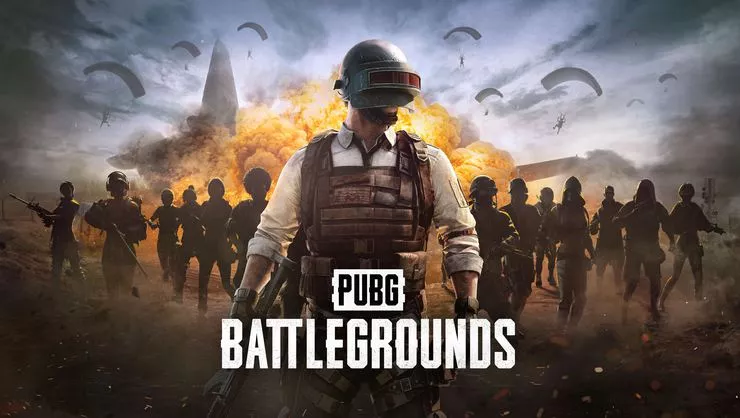
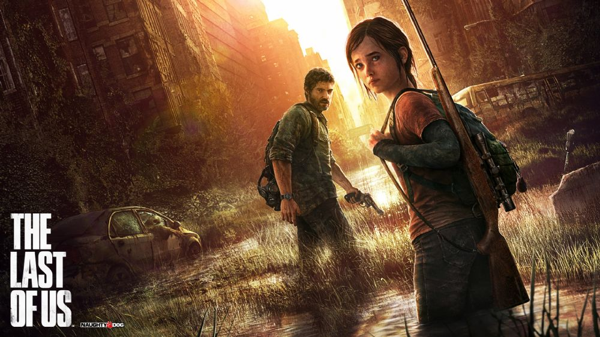
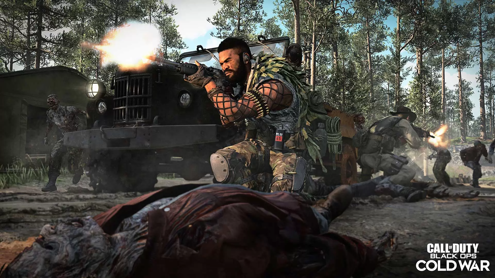

Burada sizlere "Aksiyon Oyunları" tavsiye ediyor olacağım.
İlk tavsiye ettiğim oyun: PLAYERUNKNOWN'S BATTLEGROUNDS

PUBG, 100'e yakın oyuncunun büyük ölçekli bir haritada birbirlerini öldürerek hayatta kalmaya çalıştıkları bir ölüm maçı oyunudur. Oyuncular oyuna tek başına, 2 ya da 4 kişilik takımlar hâlinde veya 4 kişilik takımlara karşı tek başına girebilir. Tek başına grup hâlinde girmeyi tercih eden oyuncular rastgele farklı oyuncularla takım olarak eşleştirilir. Her durumda oyuncular oyunu kazanmak için ölmeden en sona kalan oyuncu ya da takım olmaya çalışırlar. Takımdaki tüm oyuncular ölmeden takım dağılmaz.
Sırada ikinci oyunumuz olan: THE LAST OF US

Oyun; tüm dünyayı saran ve bulaşanları birkaç saat içerisinde insanlara saldıran yaratıklara dönüştüren salgın bir hastalığın başlamasından yirmi yıl sonrasını, 2033 yılını konu alır. Hastalık sebebiyle medeniyet büyük ölçüde mahvolmuş ve farklı gruplar hâlinde yaşamak zorunda kalan insanlar, hayatta kalabilmek için birbirleri ve hastalıklılara karşı mücadele etmek zorunda kalmıştır. Bu kıyamet sonrası ortamdaki Amerika Birleşik Devletleri'nde geçen oyun, orta yaşlardaki erkek karakter Joel'un (Troy Baker'ın seslendirmesi ve canlandırması ile), hastalığa karşı bağışıklığı olan genç kız Ellie'yi (Ashley Johnson'ın seslendirmesi ve canlandırması ile) Ateşböcekleri adlı ayrılıkçı bir gruba ulaştırması sırasında ikilinin başından geçenleri konu alır. Oyunun büyük bir kısmında Joel, oyuncular tarafından kontrol edilir ve karşılaşılan çeşitli zorlukların üstesinden gelmeye çalışır.
Son olarak tavsiye ettiğim oyun: CALL OFF DUTY BLACK OPS

Oyun Soğuk Savaş döneminde geçmektedir. Oyuncu SOG adında gizli bir ekibin üyesidir. Bu ekip Laos, Küba, Vietnam gibi yerlerde varlık göstermektedir. Oyunda Call of Duty: World at War'dan Sgt. Reznov da yer almaktadır. Call of Duty oyunlarında klasikleşmiş araç kullanmada ise oyuncu bir SR-71 Blackbird ve Mil Mi-24 pilotu olacaktır. Çok oyunculu modda ise Call of Duty: Modern Warfare 2 ve Call of Duty: World at War'daki özellikler birleştirilmiştir. Oyuncular kendi silahlarını ve perklerini yaratabilmektedirler. Yeni "killstreak" olarak napalm füzesi ve uzaktan kumandalı bomba arabası açıklandı. Zombi modu oyunda bulunmakta fakat haritaları sadece veteran ve hardened versiyonlarındadır. Oyun ilk çıktığı gün sadece PlayStation 3 platformu için 1 milyondan fazla satmıştır. Zombi haritaları Call of Duty: World at War'dakilerden farklıdır. Treyarch Call of Duty: Black Ops için bir harita paketi duyurdu. İçinde 4 yeni çok oyunculu haritası ve 1 zombi haritası vardır.